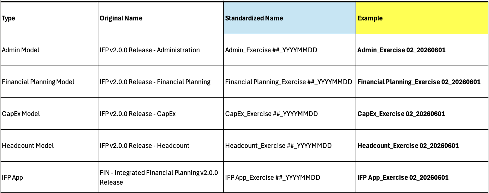

Configuration Exercise 2: Insurance – 3 Statement Planning
Hands-on exercise to configure IFP for an insurance company
Configuration30 minGuided Practice
Standardized Naming Convention
Replace the default model and app names with a standardized format before generating. The recommended pattern is [ModelType]_Exercise ##_YYYYMMDD — this ensures every generation produces uniquely-named artifacts and avoids name-collision generation errors when the same exercise is run more than once in the tenant.

Scenario
An insurance company requires comprehensive financial planning across income statement, balance sheet, and cash flow. Multiple products with detailed cost center and vendor tracking.
Model Setup
- Insurance company with multi-product portfolio
- All use cases in-scope (P&L, Balance Sheet, Cashflow)
- Will not use top-down targets
- Time strata: Monthly
- Generation time: TBD
Dimension Configuration
| Standard Dimension | Required? | Rename To | # of Levels |
|---|---|---|---|
| Entity | Yes | — | 2 |
| Department | Yes | — | 2 |
| Product | Yes | Produit | 5 |
| Job | Yes | — | 3 |
| Vendor | Yes | Projects | 2 |
| Functional Area | Yes | — | 3 |
| Customer | No | — | — |
| Location | No | — | — |
Custom Dimensions
| Custom List | Type | Notes |
|---|---|---|
| CapEx List | Flat | For capital project tracking |
Key Configuration Decisions
- Balance Sheet: Yes (3-statement planning required)
- Cashflow Reporting: Yes
- Product dimension deeply configured (5 levels) for detailed product profitability
- Will require extension for CapEx project tracking
Example 2 - Configurations
| Question | Answer | Details |
|---|---|---|
| Top-Level Questions | ||
| 8. Use geography dimension? | No | |
| 11. Use functional area dimension? | Yes | Is being re-purposed for Projects |
| Financial Planning Questions | ||
| 2. Top-down targets? | No | |
| 15. Dimensionality for expense planning | Department, Vendor | |
| 16. Dimensionality for itemized expense planning | Department | |
| 17. Expense allocations? | No | |